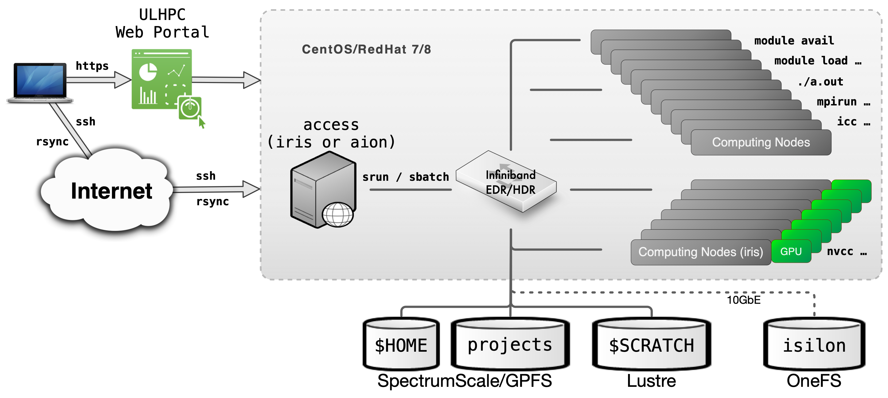
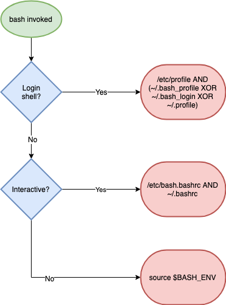

ULHPC User Environment¶
Your typical journey on the ULHPC facility is illustrated in the below figure.

Typical workflow on UL HPC resources
You daily interaction with the ULHPC facility includes the following actions:
Preliminary setup
- Connect to the access/login servers
- This can be done either by
ssh(recommended) or via the ULHPC OOD portal - (advanced users) at this point, you probably want to create (or reattach) to a
screenortmuxsession
- This can be done either by
- Synchronize you code and/or transfer your input data using
rsync/svn/gittypically - recall that the different storage filesystems are shared (via a high-speed interconnect network) among the computational resources of the ULHPC facilities. In particular, it is sufficient to exchange data with the access servers to make them available on the clusters - Reserve a few interactive resources with
salloc -p interactive [...]- recall that the
modulecommand (used to load the ULHPC User software) is only available on the compute nodes - (eventually) build your program, typically using
gcc/icc/mpicc/nvcc.. - Test your workflow / HPC analysis on a small size problem (
srun/python/sh...) - Prepare a launcher script
<launcher>.{sh|py}
- recall that the
Then you can proceed with your Real Experiments:
- Reserve passive resources:
sbatch [...] <launcher> - Grab the results and (eventually) transfer back your output results using
rsync/svn/git
For more information:
Getting error '-bash: module: command not found' on access/login servers
Recall that by default, the module command is NOT available on the access/login servers (on purpose). The module command is only available on computing nodes, within a slurm job.
Home and Directories Layout¶
All UL HPC systems use global home directories. You also have access with environment variables to several other pre-defined directories setup over several different File Systems which co-exist on the UL HPC facility and are configured for different purposes. They are listed below:
Cluster file systems
| Directory | Environment variable | File system | Backup | Interconnect |
|---|---|---|---|---|
/home/users/<username> |
${HOME} |
GPFS/Spectrumscale[1] | no | Infiniband |
/work/projects/<project name> |
${PROJECTHOME}/<project name> |
GPFS/Spectrumscale[1] | yes (partial, only backup subdirectory) |
Infiniband |
/scratch/users/<username> |
${SCRATCH} |
Lustre | no | Infiniband |
/mnt/isilon/projects/<project name> |
- | OneFS | yes (and live sync[2]) | Ehternet |
- The file system mounted on the home directories (
/home/users) and project directories (/work/projects) are both exported by the GPFS/Spectrumscale file system.- Storage for both directories is redundant, so they are safe against hardware failure.
- Only
/home/usersis mirrored in a SSD cache, so/home/usersis a significantly faster for random and small file I/O.
- Live sync replicates data across multiple OneFS instances for high availability.
Shell and Dotfiles¶
The default login shell is bash -- see /etc/shells for supported shells.
ULHPC dotfiles vs. default dotfiles
The ULHPC team DOES NOT populate shell initialization files (also known as dotfiles) on users' home directories - the default system ones are used in your home -- you can check them in /etc/skel/.* on the access/login servers. However, you may want to install the ULHPC/dotfiles available as a Github repository. See installation notes. A working copy of that repository exists in /etc/dotfiles.d on the access/login servers. You can thus use it:
$ /etc/dotfiles.d/install.sh -h
# Example to install ULHPC GNU screen configuration file
$ /etc/dotfiles.d/install.sh -d /etc/dotfiles.d/ --screen -n # Dry-run
$ /etc/dotfiles.d/install.sh -d /etc/dotfiles.d/ --screen # real install
Changing Default Login Shell (or NOT)
If you want to change your your default login shell, you should set that up using the ULHPC IPA portal (change the Login Shell attribute). Note however that we STRONGLY discourage you to do so. You may hit unexpected issues with system profile scripts expecting bash as running shell.
System Profile¶
/etc/profile contains Linux system wide environment and startup programs. Specific scripts are set to improve your ULHPC experience, in particular those set in the ULHPC/tools repository, for instance:
- /etc/profile.d/slurm-prompt.sh: provide info of your running Slurm job on your prompt
- /etc/profile.d/slurm.sh: several helper function to
Customizing Shell Environment¶
You can create dotfiles (e.g., .bashrc, .bash_profile, or .profile, etc) in your $HOME directory to put your personal shell modifications.
Custom Bash Initialisation Files
On ULHPC system ~/.bash_profile and ~/.profile are sourced by login shells, while ~/.bashrc is sourced by most of the shell invocations including the login shells. In general you can put the environment variables, such as PATH, which are inheritable to subshells in ~/.bash_profile or ~/.profile and functions and aliases in the ~/.bashrc file in order to make them available in subshells. ULHPC/dotfiles bash configuration even source the following files for that specific purpose:
~/.bash_private: custom private functions~/.bash_aliases: custom private aliases.
Understanding Bash Startup Files order
See reference documentation. That's somehow hard to understand. Some tried to explicit it under the form of a "simple" graph -- credits for the one below to Ian Miell (another one)

This explains why normally all ULHPC launcher scripts start with the following sha-bang (#!) header
#!/bin/bash -l
#
#SBATCH [...]
[...]
That's indeed the only way (i.e. using /bin/bash -l instead of the classical /bin/bash) to ensure that /etc/profile is sourced natively, and thus that all ULHPC environments variables and modules are loaded. If you don't proceed that way (i.e. following the classical approach), you MUST then use the following template you may see from other HPC centers:
#!/bin/bash
#
#SBATCH [...]
[...]
# Load ULHPC Profile
if [ -f /etc/profile ]; then
. /etc/profile
fi
Since all ULHPC systems share the Global HOME filesystem, the same $HOME is available regardless of the platform. To make system specific customizations use the pre-defined environment ULHPC_CLUSTER variable:
Example of cluster specific settings
case $ULHPC_CLUSTER in
"iris")
: # Settings for iris
export MYVARIABLE="value-for-iris"
;;
"aion")
: # settings for aion
export MYVARIABLE="value-for-aion"
;;
*)
: # default value for
export MYVARIABLE="default-value"
;;
esac

Operating Systems ¶

The ULHPC facility runs RedHat-based Linux Distributions, in particular:
- the Iris cluster and the Aion cluster run RedHat (RHEL) Linux operating system, version 8 on the access and compute nodes. Servers (not accessible to users) run Rocky Linux 8, which is RHEL compatible, when appropriate.

- Experimental Grid5000 clusters run Debian Linux, version 11
Thus, you are more than encouraged to become familiar - if not yet - with Linux commands. We can recommend the following sites and resources:
Discovering, visualizing and reserving UL HPC resources¶
See ULHPC Tutorial / Getting Started
ULHPC User Software Environment¶

The UL HPC facilities provides a large variety of scientific applications to its user community, including domain-specific codes and general purpose development tools for a wide range of applications.1 An environment module system, LMod, is used to manage the shell environment and provide access to installed software.
The main advantages of using an environment module system are the following:
- Many different versions and/or installations of a single software package can be provided on a given machine, including a default version as well as several older and newer version.
- Users can easily switch to different versions or installations of a software package without having to explicitly modify their shell environment.
Most UL HPC modules are automatically generated by Easybuild.

EasyBuild is a software build and installation framework that allows you to manage scientific and other software on High Performance Computing systems in an efficient way. A large number of scientific software are supported (at least 3670 supported software packages since the 4.9.4 release).2
For several years now, Easybuild is used to manage the ULHPC User Software Set and generate automatically the module files available to you on our computational resources in either release (default) or testing (pre-release/testing) environment. This enables users to easily extend the global software set with their own local software builds, either stored within their global home directory, or preferably in a shared project directory. Easybuild generates automatically module files compliant with the ULHPC module setup.
ULHPC Environment modules Using Easybuild on ULHPC Clusters
Self management of work environments in UL HPC with Conda¶
Packages provided through the standard channels of modules and containers are optimized for the ULHPC clusters to ensure their performance and stability. However, many packages where performance is not critical and are used by few users are not provided through the standard channels. These packages can still be installed locally by the users through an environment management system such as Conda.
Contact the ULHPC before installing any software with Conda
Prefer binaries provided through modules or containers. Conda installs generic binaries that may be suboptimal for the configuration of the ULHPC clusters. Furthermore, installing packages locally with Conda consumes quotas in your or your project's account in terms of storage space and number of files.
Contact the ULHPC High Level Support Team in the service portal [Home > Research > HPC > Software environment > Request expertise] to discuss possible options before installing any software.
Conda is an open source environment and package management system. With Conda you can create independent environments, where you can install applications such as python and R, together with any packages which will be used by these applications. The environments are independent, with the Conda package manager managing the binaries, resolving dependencies, and ensuring that package used in multiple environments are stored only once. In a typical setting, each user has their own installation of a Conda and a set of personal environments.
Management of work environments with Conda
-
See our software list for a detailed list of available applications. ↩
-
See also "What is EasyBuild?". ↩